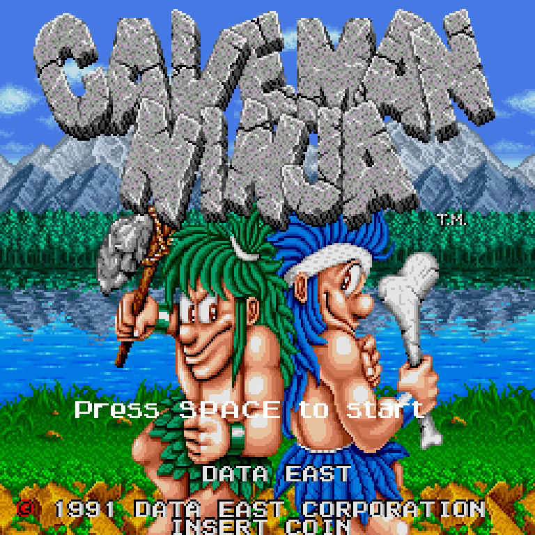
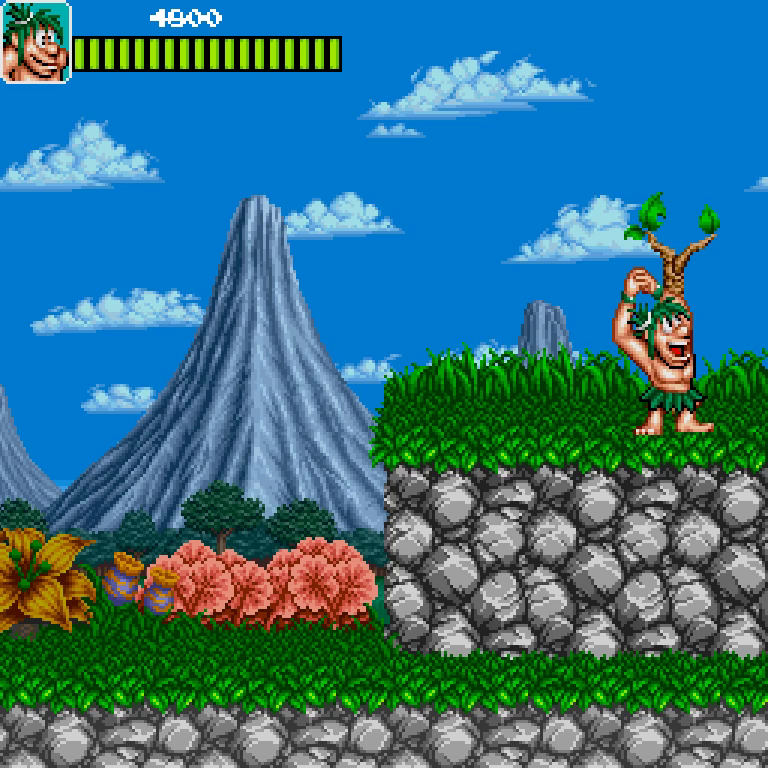
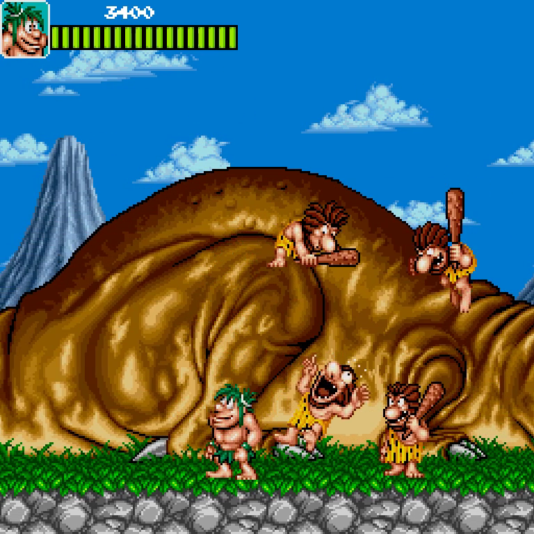
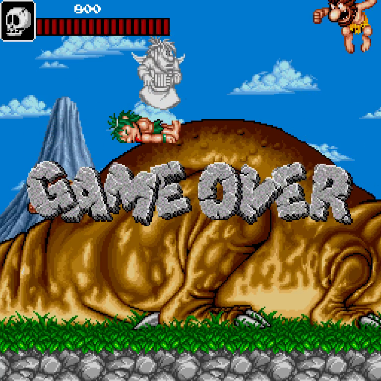

Description
This is a tribute to the game Caveman Ninja. Made with SDL and C++, you can play the first level (without the boss) in linux and windows.
Has sounds, effects, items, enemies' AI and much of the animations. Next versions will have even more. There's some little bugs that I'm already fixing it. But it's perfectly playable, so download it and enjoy!
Videos
The original Caveman Ninja arcade
The actual result of my attempt
The first part of the video is the first release and the software with I recorded it was not very good, so seems more slow than actually is. The rest of the video is the new beta made for linux and it has a few more bug. But working on it!
Screenshots
   Experience
I have to recognize that I didn't put all my effort in this project at the beginning, so the result is less than it should be. However, I enjoyed the project and I want to continue with it a little bit more.
Graphics were hard to find, some of them are available on the network, and also much of the audio. Scenarios and other statics elements' sprites were easy to rip from an emulator, but enemies... that was a bit difficult, at least for me. They have a lot of animations with their frames!
But the hardest part of the project was the damn collisions. That will be the same hard part in my projects for a long time. When you try to detect collisions between rectangles and circles is easy. Putting a floor and get the character standing on it is really easy. But, oh my god, when you have to deal with curves and rotated rectangles. The dinosaur's back is not flat, rectangles are not adequate, and circles neither, because the useful part of the circle in that case is only the top part, and how I will deal with it when I jump down through the collider.
The only solution was rotated rectangles. Hours and days spent testing the collisions and nothing worked. I had to ask for help to a friend, getting his code, adapting to my code and doing little few "tricks" (horrible word for a programmer, I know).The rest of the project was relatively easy, just some work, adding features, fixing bugs due to the features added and cursing the collisions.
One of the things learned with the project was the importance of sounds, effects and states of the game, like the initial screen. Before that, the game sucked. But when I added all the effects, the game improved significantly and I thought to myself: "hey! this is cool! I like my game!"
Hope I will find the time to continue it a little more and refine the result.